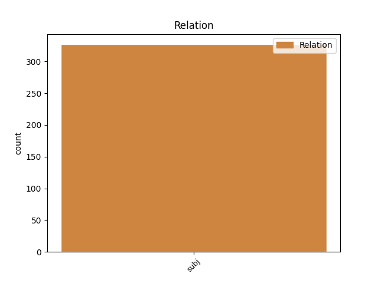

Distribution of features within this leaf


Agreement Rules sorted by frequency.
- When the dependent token is the parataxis(parataxis) of the head token, and the head token is VERB and the dependent token is VERB.
1 " _ _ _ _ 0 _ _ _
2 Muiden _ _ _ _ 0 _ _ _
3 pelaajien _ _ _ _ 0 _ _ _
4 mukaan _ _ _ _ 0 _ _ _
5 hän _ _ _ _ 0 _ _ _
6 käyttäytyi käyttäytyä VERB V Mood=Ind|Number=Sing|Person=3|Tense=Past|VerbForm=Fin|Voice=Act 0 _ _ _
7 jostain _ _ _ _ 0 _ _ _
8 syystä _ _ _ _ 0 _ _ _
9 hermostuneesti _ _ _ _ 0 _ _ _
10 " _ _ _ _ 0 _ _ _
11 , _ _ _ _ 0 _ _ _
12 kertoi kertoa VERB V Mood=Ind|Number=Sing|Person=3|Tense=Past|VerbForm=Fin|Voice=Act 6 parataxis _ _
13 joukkueenjohtaja _ _ _ _ 0 _ _ _
14 Jorge _ _ _ _ 0 _ _ _
15 Bastos _ _ _ _ 0 _ _ _
16 . _ _ _ _ 0 _ _ _
1 Samat _ _ _ _ 0 _ _ _
2 aiheet _ _ _ _ 0 _ _ _
3 toistuivat toistua VERB V Mood=Ind|Number=Plur|Person=3|Tense=Past|VerbForm=Fin|Voice=Act 0 _ _ _
4 myös _ _ _ _ 0 _ _ _
5 kehittämisehdotuksissa _ _ _ _ 0 _ _ _
6 , _ _ _ _ 0 _ _ _
7 mikä _ _ _ _ 0 _ _ _
8 kertoo _ _ _ _ 0 _ _ _
9 uuden _ _ _ _ 0 _ _ _
10 tutkinnon _ _ _ _ 0 _ _ _
11 asiakaskunnan _ _ _ _ 0 _ _ _
12 erilaisista _ _ _ _ 0 _ _ _
13 koulutuskokemuksista _ _ _ _ 0 _ _ _
14 ja _ _ _ _ 0 _ _ _
15 -odotuksista _ _ _ _ 0 _ _ _
16 sekä _ _ _ _ 0 _ _ _
17 koulutusohjelmien _ _ _ _ 0 _ _ _
18 tasoeroista _ _ _ _ 0 _ _ _
19 : _ _ _ _ 0 _ _ _
20 jossain _ _ _ _ 0 _ _ _
21 on olla AUX V Mood=Ind|Number=Sing|Person=3|Tense=Pres|VerbForm=Fin|Voice=Act 3 parataxis _ _
22 onnistuttu _ _ _ _ 0 _ _ _
23 hyvin _ _ _ _ 0 _ _ _
24 , _ _ _ _ 0 _ _ _
25 toisaalla _ _ _ _ 0 _ _ _
26 on _ _ _ _ 0 _ _ _
27 vielä _ _ _ _ 0 _ _ _
28 kehitettävää _ _ _ _ 0 _ _ _
29 . _ _ _ _ 0 _ _ _
Disagree Examples:
1 Videossa _ _ _ _ 0 _ _ _
2 näkyvä _ _ _ _ 0 _ _ _
3 ledi _ _ _ _ 0 _ _ _
4 on _ _ _ _ 0 _ _ _
5 vain _ _ _ _ 0 _ _ _
6 demonstraatiotarkoituksessa _ _ _ _ 0 _ _ _
7 piirissä _ _ _ _ 0 _ _ _
8 mukana _ _ _ _ 0 _ _ _
9 ( _ _ _ _ 0 _ _ _
10 välähtää _ _ _ _ 0 _ _ _
11 aina _ _ _ _ 0 _ _ _
12 kun _ _ _ _ 0 _ _ _
13 Arduino _ _ _ _ 0 _ _ _
14 lähettää _ _ _ _ 0 _ _ _
15 pulssin _ _ _ _ 0 _ _ _
16 , _ _ _ _ 0 _ _ _
17 joka _ _ _ _ 0 _ _ _
18 sulkee _ _ _ _ 0 _ _ _
19 optoerottimen _ _ _ _ 0 _ _ _
20 ja _ _ _ _ 0 _ _ _
21 luo _ _ _ _ 0 _ _ _
22 virtapiirin _ _ _ _ 0 _ _ _
23 kameran _ _ _ _ 0 _ _ _
24 puolelle _ _ _ _ 0 _ _ _
25 , _ _ _ _ 0 _ _ _
26 jolloin _ _ _ _ 0 _ _ _
27 kameraa _ _ _ _ 0 _ _ _
28 ottaa _ _ _ _ 0 _ _ _
29 kuvan _ _ _ _ 0 _ _ _
30 ) _ _ _ _ 0 _ _ _
31 , _ _ _ _ 0 _ _ _
32 sillä _ _ _ _ 0 _ _ _
33 sen _ _ _ _ 0 _ _ _
34 tilalla _ _ _ _ 0 _ _ _
35 kuuluisi kuulua VERB V Mood=Cnd|Number=Sing|Person=0|VerbForm=Fin|Voice=Act 0 _ _ _
36 olla _ _ _ _ 0 _ _ _
37 kameraan _ _ _ _ 0 _ _ _
38 menevät _ _ _ _ 0 _ _ _
39 piuhat _ _ _ _ 0 _ _ _
40 ( _ _ _ _ 0 _ _ _
41 ledille _ _ _ _ 0 _ _ _
42 meneviä _ _ _ _ 0 _ _ _
43 piuhoja _ _ _ _ 0 _ _ _
44 ei ei AUX V Number=Sing|Person=3|Polarity=Neg|VerbForm=Fin|Voice=Act 35 parataxis _ _
45 myöskään _ _ _ _ 0 _ _ _
46 todellisuudessa _ _ _ _ 0 _ _ _
47 tarvita _ _ _ _ 0 _ _ _
48 ) _ _ _ _ 0 _ _ _
49 . _ _ _ _ 0 _ _ _
1 Jos _ _ _ _ 0 _ _ _
2 joku _ _ _ _ 0 _ _ _
3 sana _ _ _ _ 0 _ _ _
4 pistää _ _ _ _ 0 _ _ _
5 silmään _ _ _ _ 0 _ _ _
6 , _ _ _ _ 0 _ _ _
7 löydätte _ _ _ _ 0 _ _ _
8 selkeän _ _ _ _ 0 _ _ _
9 kirjoitusvirheen _ _ _ _ 0 _ _ _
10 tai _ _ _ _ 0 _ _ _
11 muuta _ _ _ _ 0 _ _ _
12 huomautettavaa _ _ _ _ 0 _ _ _
13 , _ _ _ _ 0 _ _ _
14 ilmoittakaa ilmoittaa VERB V Mood=Imp|Number=Plur|Person=2|VerbForm=Fin|Voice=Act 0 _ _ _
15 ihmeessä _ _ _ _ 0 _ _ _
16 vaikka _ _ _ _ 0 _ _ _
17 tämän _ _ _ _ 0 _ _ _
18 tekstin _ _ _ _ 0 _ _ _
19 perään _ _ _ _ 0 _ _ _
20 tai _ _ _ _ 0 _ _ _
21 suoraan _ _ _ _ 0 _ _ _
22 sähköpostilla _ _ _ _ 0 _ _ _
23 ( _ _ _ _ 0 _ _ _
24 palautelomakekin _ _ _ _ 0 _ _ _
25 käy käydä VERB V Mood=Ind|Number=Sing|Person=3|Tense=Pres|VerbForm=Fin|Voice=Act 14 parataxis _ SpaceAfter=No
26 ) _ _ _ _ 0 _ _ _
27 . _ _ _ _ 0 _ _ _
1 Siksi _ _ _ _ 0 _ _ _
2 teinkin tehdä VERB V Clitic=Kin|Mood=Ind|Number=Sing|Person=1|Tense=Past|VerbForm=Fin|Voice=Act 0 _ _ _
3 datasta _ _ _ _ 0 _ _ _
4 neljä _ _ _ _ 0 _ _ _
5 tietokantadumppia _ _ _ _ 0 _ _ _
6 , _ _ _ _ 0 _ _ _
7 jotka _ _ _ _ 0 _ _ _
8 annan _ _ _ _ 0 _ _ _
9 kaikkien _ _ _ _ 0 _ _ _
10 käytettäväksi _ _ _ _ 0 _ _ _
11 – _ _ _ _ 0 _ _ _
12 näillä _ _ _ _ 0 _ _ _
13 voi voida AUX V Mood=Ind|Number=Sing|Person=0|Tense=Pres|VerbForm=Fin|Voice=Act 2 parataxis _ _
14 siis _ _ _ _ 0 _ _ _
15 rakentaa _ _ _ _ 0 _ _ _
16 melkeinpä _ _ _ _ 0 _ _ _
17 mitä _ _ _ _ 0 _ _ _
18 tahansa _ _ _ _ 0 _ _ _
19 , _ _ _ _ 0 _ _ _
20 jos _ _ _ _ 0 _ _ _
21 osaa _ _ _ _ 0 _ _ _
22 . _ _ _ _ 0 _ _ _
1 Ruskistin ruskistaa VERB V Mood=Ind|Number=Sing|Person=1|Tense=Past|VerbForm=Fin|Voice=Act 0 _ _ _
2 kyljykset _ _ _ _ 0 _ _ _
3 paistinpannulla _ _ _ _ 0 _ _ _
4 tilkassa _ _ _ _ 0 _ _ _
5 öljyä _ _ _ _ 0 _ _ _
6 ( _ _ _ _ 0 _ _ _
7 kaksi _ _ _ _ 0 _ _ _
8 kyljystä _ _ _ _ 0 _ _ _
9 mahtui mahtua VERB V Mood=Ind|Number=Sing|Person=3|Tense=Past|VerbForm=Fin|Voice=Act 1 parataxis _ _
10 just _ _ _ _ 0 _ _ _
11 ja _ _ _ _ 0 _ _ _
12 just _ _ _ _ 0 _ _ _
13 ruskistumaan _ _ _ _ 0 _ _ _
14 samanaikaisesti _ _ _ _ 0 _ _ _
15 isolle _ _ _ _ 0 _ _ _
16 pannulle _ _ _ _ 0 _ _ _
17 ) _ _ _ _ 0 _ _ _
18 + _ _ _ _ 0 _ _ _
19 ripsottelin _ _ _ _ 0 _ _ _
20 mustapippurirouhetta _ _ _ _ 0 _ _ _
21 ja _ _ _ _ 0 _ _ _
22 suolaa _ _ _ _ 0 _ _ _
23 lihoille _ _ _ _ 0 _ _ _
24 ja _ _ _ _ 0 _ _ _
25 lisäsin _ _ _ _ 0 _ _ _
26 samalle _ _ _ _ 0 _ _ _
27 pannulle _ _ _ _ 0 _ _ _
28 ruskistumaan _ _ _ _ 0 _ _ _
29 omenalohkot _ _ _ _ 0 _ _ _
30 ja _ _ _ _ 0 _ _ _
31 otin _ _ _ _ 0 _ _ _
32 ne _ _ _ _ 0 _ _ _
33 sitten _ _ _ _ 0 _ _ _
34 lautaselle _ _ _ _ 0 _ _ _
35 odottamaan _ _ _ _ 0 _ _ _
36 ... _ _ _ _ 0 _ _ _
37 . _ _ _ _ 0 _ _ _
1 Kuori kuoria VERB V Mood=Imp|Number=Sing|Person=2|VerbForm=Fin|Voice=Act 0 _ _ _
2 ja _ _ _ _ 0 _ _ _
3 paloittele _ _ _ _ 0 _ _ _
4 juurekset _ _ _ _ 0 _ _ _
5 sekä _ _ _ _ 0 _ _ _
6 sipulit _ _ _ _ 0 _ _ _
7 ( _ _ _ _ 0 _ _ _
8 valkosipulinkynnet _ _ _ _ 0 _ _ _
9 voi voida AUX V Mood=Ind|Number=Sing|Person=0|Tense=Pres|VerbForm=Fin|Voice=Act 1 parataxis _ _
10 jättää _ _ _ _ 0 _ _ _
11 kokonaisiksi _ _ _ _ 0 _ _ _
12 , _ _ _ _ 0 _ _ _
13 sipulit _ _ _ _ 0 _ _ _
14 ja _ _ _ _ 0 _ _ _
15 perunat _ _ _ _ 0 _ _ _
16 voi _ _ _ _ 0 _ _ _
17 puolittaa _ _ _ _ 0 _ _ _
18 ) _ _ _ _ 0 _ _ _
19 . _ _ _ _ 0 _ _ _